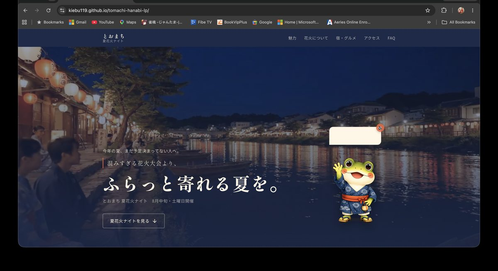
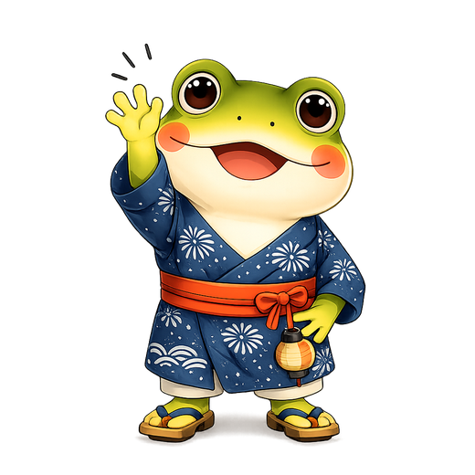
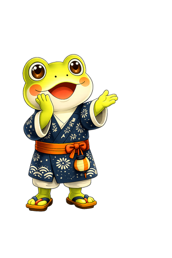
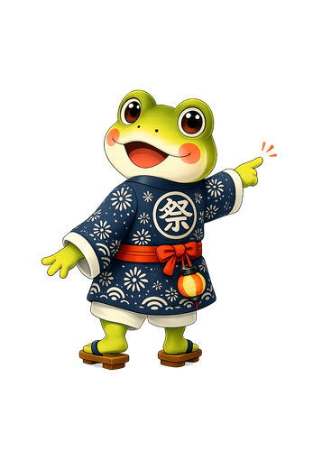
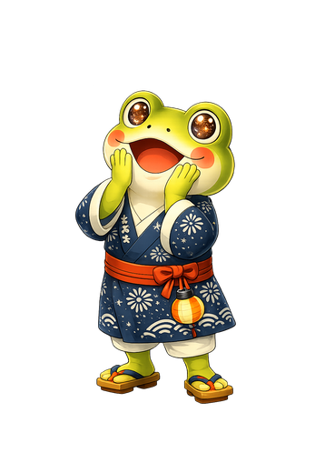
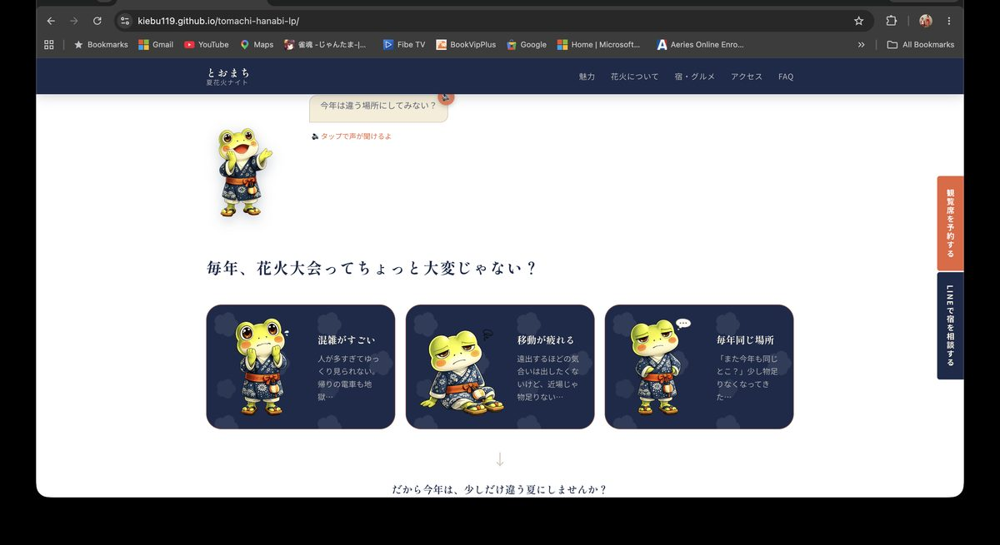
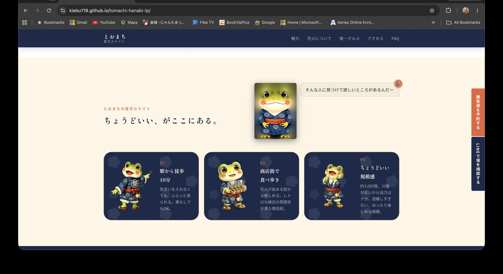
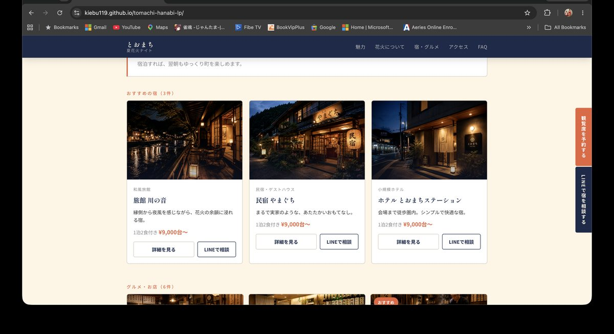
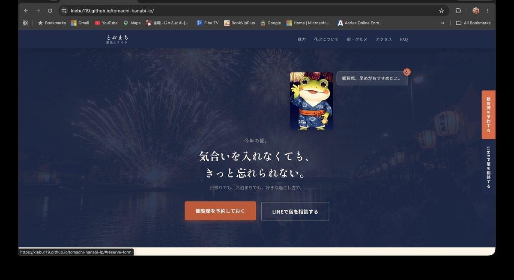
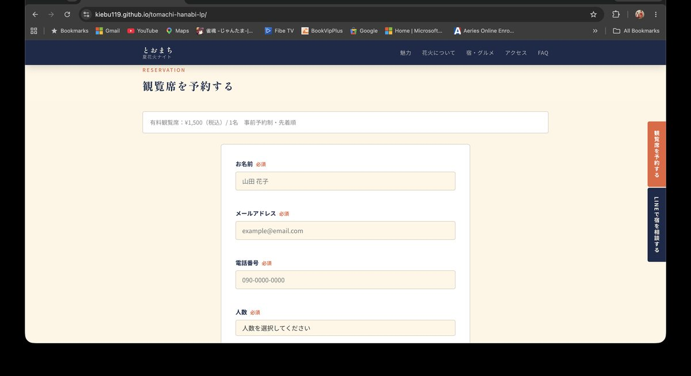

架空の観光地「とおまち」の花火イベントLP。規模で張り合うのではなく、「混みすぎない」ことを価値に変える方向で設計しました。企画・リサーチからオリジナルキャラクター、AI動画、コーディング、予約フォームまで一人で担当しています。
A landing page for a fireworks event in a fictional Japanese town. Instead of competing on scale, I turned "not too crowded" into the selling point — handling research, an original character, AI video, front-end and the booking form myself.

花火大会に行きたい気持ちはあるのに、混雑・移動・帰りの電車を思い出すと足が止まる。小さな町のイベントが、大きな花火大会と同じ土俵で「規模」を訴えても勝てません。
People want to go, but the memory of the crowds, the travel and the packed trains stops them. A small town can't win by competing on scale with the big festivals.
この案件の課題は、知名度でも打ち上げ数でもなく、「今年の夏、まだ予定を決めていない人」に、行かない理由を1つずつ外してもらうことでした。
The real task wasn't fame or firework count — it was removing, one by one, the reasons someone with no summer plans decides not to go.
花火大会の不満を洗い出すと、出てくるのは打ち上げ数ではなく体験の質でした。人が多すぎて見えない、帰りが大変、毎年同じ場所で飽きた。つまり大規模であることは、そのまま不満の原因でもあります。
Listing what people dislike about fireworks festivals, the complaints were never about the number of shells — they were about the experience. Too crowded to see, exhausting to get home, the same place every year. Scale itself is the source of the frustration.
人が多すぎてゆっくり見られない。帰りの電車も大変。
Too many people to enjoy it, and the trip home is brutal.
遠出するほどの気合いは出したくない。でも近場では物足りない。
Not enough energy for a long trip — but nearby feels dull.
「また今年も同じとこ?」少し物足りなくなってきた。
"The same spot again?" It's starting to feel repetitive.
約3,000発という規模は、大規模大会と比べれば小さい。そこを隠して背伸びするのではなく、「ちょうどいい」と言い切る方向に振りました。混雑しない・駅から徒歩10分・気合いがいらない。すべて、大きい大会には作れない価値です。
Three thousand shells is modest next to the major festivals. Rather than hiding that, I named it: this is the right size. Not crowded, ten minutes from the station, no effort required — none of which a large festival can offer.
「一番大きい花火大会」ではなく、
気合いを入れなくても行ける、ちょうどいい夏。
Not the biggest fireworks festival — the one you can actually just show up to.
この判断は、そのままコピーと写真選びの基準になりました。派手な打ち上げの瞬間より、提灯の下を歩く人、川辺に座る浴衣姿。「その日の過ごし方」が伝わる画を優先しています。
That decision became the rule for copy and photography: fewer explosive climaxes, more lanterns overhead and people sitting by the river — images of how the evening actually feels.
コピーで一番こだわったのは動詞です。「行く」は準備と決意が必要ですが、「寄れる」なら軽い。ターゲットが手放したいのは花火ではなく、気合いを入れる工程だからです。
The verb mattered most. "Going" implies planning and commitment; "stopping by" costs nothing. What this audience wants to skip isn't the fireworks — it's the effort around them.
観光地のLPは、情報が多くなるほど「読む作業」になります。そこで案内役のキャラクターを作り、悩みへの共感・町の紹介・予約の後押しをすべてトーマくんの言葉で運ぶ設計にしました。10種類以上の表情とポーズを用意し、セクションごとに感情を合わせています。
Tourism pages get information-heavy fast, and reading turns into work. So I created a guide character: empathy, introductions and the final nudge to book all come through Toma's voice. More than ten poses and expressions were made so his mood matches each section.

あいさつGreeting
共感・語りかけEmpathy
町の案内Guiding
花火の魅力The fireworks
キャラクターには音声も付けました。タップすると声が聞ける仕掛けで、滞在時間と記憶に残る度合いを上げています。
Toma also has a voice — tap to hear him — which lifts both time on page and how well the town is remembered.
観光イベントの目的は集客だけではなく、町にお金と記憶を落としてもらうことです。そこでLPを「花火の告知」で終わらせず、到着から翌朝までの一日として見せました。商店街の食べ歩き、宿、翌日の散策まで並べることで、日帰り前提だった人に宿泊を検討させる導線にしています。
A tourism event isn't only about attendance — it's about what the town keeps afterwards. So the page isn't an announcement; it's a whole day, from arrival to the next morning. Street food, inns and a morning walk are laid out so day-trippers start considering an overnight stay.




宿の相談はLINEに逃がしました。「電話するほどではないけれど聞きたい」という温度感に合わせた導線です。予約フォームはGoogle Apps Scriptでスプレッドシートに記録され、運営がそのまま使える形にしています。
Questions about lodging are routed to LINE — the right channel for "I'd ask, but not enough to call." Reservations are logged to a spreadsheet via Google Apps Script, ready for the organisers to work from.
SNS用にPR動画を制作しました。トーマくんをAIで動かし、声を当て、町の風景と組み合わせています。静止画のキャラクターが動いて喋ることで、架空の町に生活感が生まれました。
I produced a PR video for social. Toma was animated with AI, given a voice, and cut together with scenes of the town — and the moment a still character moves and speaks, a fictional place starts to feel lived in.
LPとSNSで同じキャラクター・同じコピーを使い、どちらから来ても同じ町に着地するようにしています。広告で興味を持った人が、ページで「さっきのカエルだ」と気づく——その一瞬が、離脱を防ぎます。
The same character and copy run across the video and the page, so whichever way someone arrives, they land in the same town. That flash of recognition — "the frog from the video" — is what keeps them from bouncing.
規模が小さいことを隠さず「ちょうどいい」と言い切ったことで、大規模大会と比較されない立ち位置ができました。
Naming the small scale as "just right" moved the event out of direct comparison with the big festivals entirely.
同じ内容でも、案内役が話すと読む負担が下がります。観光のように情報量が多い案件ほど効果的でした。
The same content reads more easily when a guide says it — especially valuable on information-heavy tourism pages.
花火の告知で終わらせず一日の流れを見せたことで、宿泊とグルメへの導線が自然に繋がりました。
Showing a whole day rather than announcing an event made lodging and food feel like the natural next step.
LPのデザインだけでなく、企画・キャラクター設計・広告動画・実装・公開まで一貫してお手伝いできます。日英どちらの制作にも対応しています。
I can help with the whole thing — concept, character design, ad creative, front-end and launch — in Japanese, English, or both.